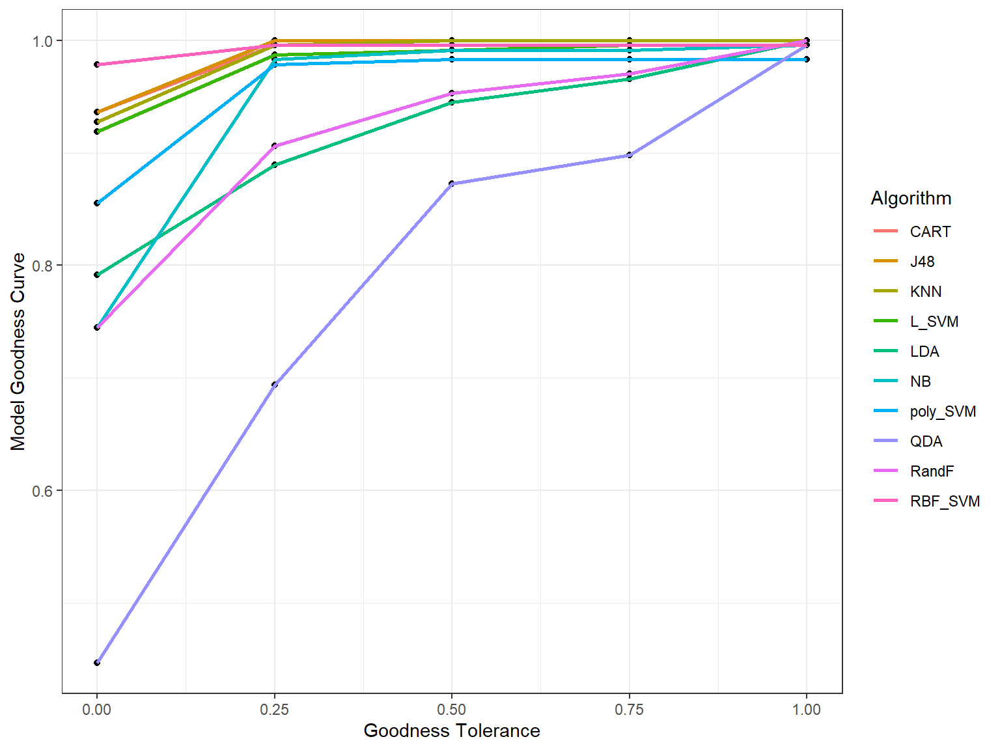
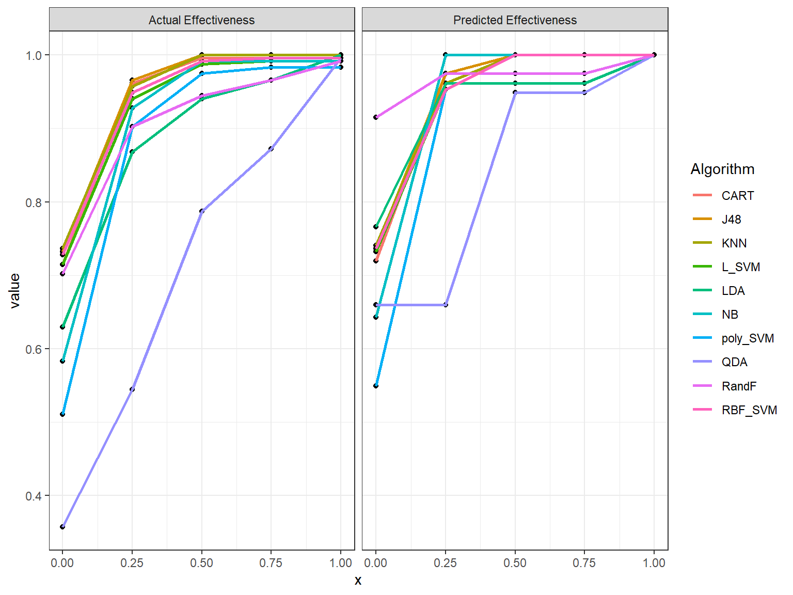
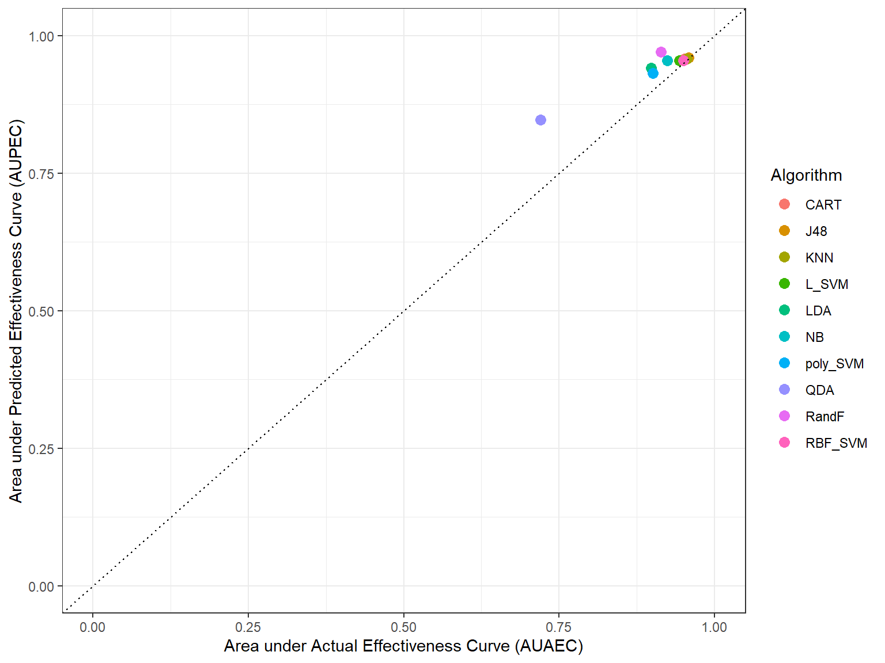

algorithmirt.Rmdlibrary(algorithmirt)
library(ggplot2)
library(tidyr)
#> Warning: package 'tidyr' was built under R version 3.6.2Let us check the goodness of the Item Response Theory (IRT) model.
data("classification")
modout <- irtmodel(classification, vpara=FALSE)
# Model Goodness and Algorithm effectiveness
good <- model_goodness(modout$model)
stab <- modout$stability
good_curves <- as.data.frame(good$curves)
print(good_curves)
#> x NB LDA QDA CART J48 KNN
#> 1 0.00 0.7446809 0.7914894 0.4468085 0.9361702 0.9361702 0.9276596
#> 2 0.25 0.9829787 0.8893617 0.6936170 0.9957447 1.0000000 0.9957447
#> 3 0.50 0.9914894 0.9446809 0.8723404 0.9957447 1.0000000 1.0000000
#> 4 0.75 0.9914894 0.9659574 0.8978723 0.9957447 1.0000000 1.0000000
#> 5 1.00 0.9957447 1.0000000 0.9957447 0.9957447 1.0000000 1.0000000
#> L_SVM poly_SVM RBF_SVM RandF
#> 1 0.9191489 0.8553191 0.9787234 0.7446809
#> 2 0.9872340 0.9787234 0.9957447 0.9063830
#> 3 0.9914894 0.9829787 0.9957447 0.9531915
#> 4 0.9957447 0.9829787 0.9957447 0.9702128
#> 5 0.9957447 0.9829787 0.9957447 1.0000000
good_df <- good_curves %>% pivot_longer(cols=2:dim(good_curves)[2], names_to=c("Algorithm"))
ggplot(good_df, aes(x,value)) + geom_point() + geom_line(aes(color = Algorithm), size=1) + xlab("Goodness Tolerance") + ylab("Model Goodness Curve") + theme_bw()
eff <- effectiveness(modout$model)
eff_curves <- as.data.frame(eff$actcurves)
eff_df1 <- eff_curves %>% pivot_longer(cols=2:dim(eff_curves)[2], names_to=c("Algorithm"))
eff_curves <- as.data.frame(eff$prdcurves)
eff_df2 <- eff_curves %>% pivot_longer(cols=2:dim(eff_curves)[2], names_to=c("Algorithm"))
eff_df <- rbind.data.frame(eff_df1, eff_df2)
eff_df <- cbind.data.frame( eff_df, c( rep( "Actual Effectiveness", dim(eff_df1)[1]), rep("Predicted Effectiveness", dim(eff_df2)[1]) ) )
colnames(eff_df)[4] <- "Act_Or_Pred"
ggplot(eff_df, aes(x, value)) + geom_point() + geom_line(aes(color = Algorithm), size=1) + facet_wrap(~Act_Or_Pred) + theme_bw()
df_eff <- cbind.data.frame(as.data.frame(eff$effectivenessAUC), rownames(eff$effectivenessAUC) )
colnames(df_eff)[3] <- "Algorithm"
ggplot(df_eff, aes(Actual, Predicted)) + geom_jitter(aes(color=Algorithm), size=3) + geom_abline(aes(intercept=0,slope=1), linetype="dotted") + xlim(c(0,1)) + ylim(c(0,1)) + xlab("Area under Actual Effectiveness Curve (AUAEC)") + ylab("Area under Predicted Effectiveness Curve (AUPEC)") + theme_bw()
measures <- cbind.data.frame(good$goodnessAUC, eff$effectivenessAUC, stab)
print(measures)
#> good$goodnessAUC Actual Predicted stab
#> NB 0.9590426 0.9244681 0.9553191 13.1072771
#> LDA 0.9239362 0.8973404 0.9420213 13.9151955
#> QDA 0.7962766 0.7202128 0.8468085 14.6497163
#> CART 0.9882979 0.9521277 0.9585106 8.7233674
#> J48 0.9920213 0.9579787 0.9606383 8.7101095
#> KNN 0.9898936 0.9563830 0.9579787 8.2837715
#> L_SVM 0.9829787 0.9430851 0.9547872 8.7829504
#> poly_SVM 0.9659574 0.9015957 0.9319149 11.5281357
#> RBF_SVM 0.9936170 0.9494681 0.9553191 0.7532538
#> RandF 0.9255319 0.9148936 0.9702128 13.8216887